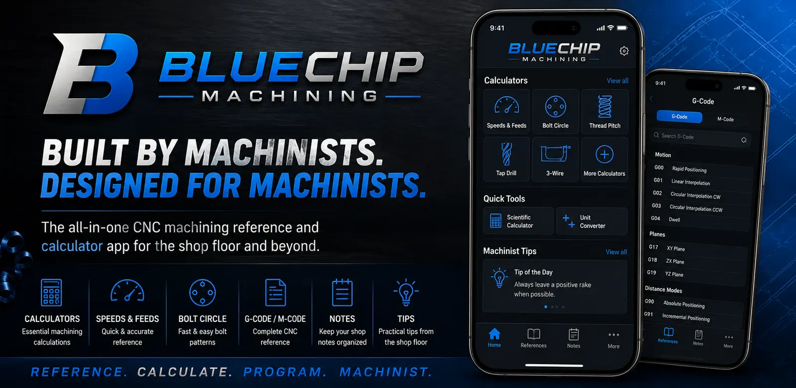
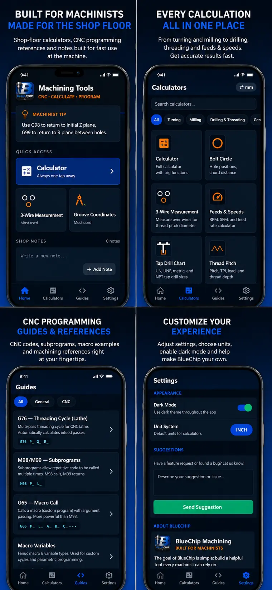
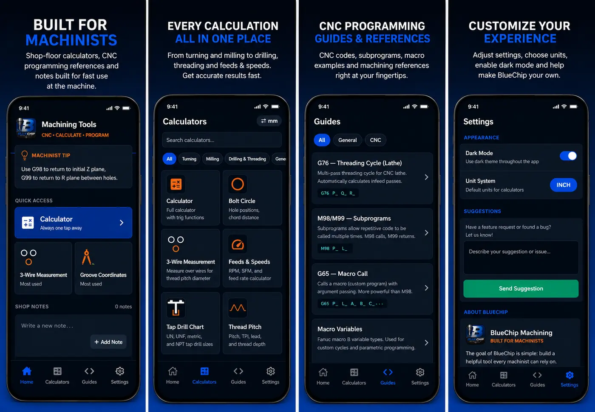

01
Machining calculators
From everyday math to specialized shop calculations.
CalculatorFeeds & speeds3-wireTap drillThread pitchBolt circle
Calculators, CNC programming references, groove coordinates, shop notes and quick-reference information—built into one focused app for the shop floor.

Get from a question to a usable answer quickly—without digging through handbooks, scattered notes or several different apps.
From everyday math to specialized shop calculations.
G-code, M-code, canned cycles, subprograms, Macro B and G75/G76 tools in one reference.
Build lathe groove profiles from diameter, width, corner radius and Z-start inputs.
Find tools quickly across turning, milling, drilling, threading, geometry and general utilities.
Keep setup details, dimensions and reminders on your device, close to the work.
Geometry, fits, loads, material weight, keyways, surface finish, cut time, gears and more.
BlueChip’s blue-and-black interface keeps dense machining information clean, categorized and readable when you need it at the machine.

Focused screens, purpose-built tools and useful information without the clutter.

The core calculator and reference experience is established. Follow the roadmap as BlueChip expands into a broader shop platform.